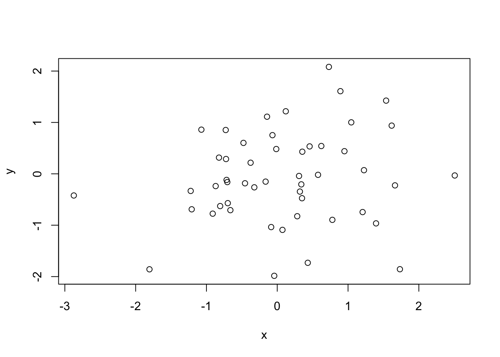
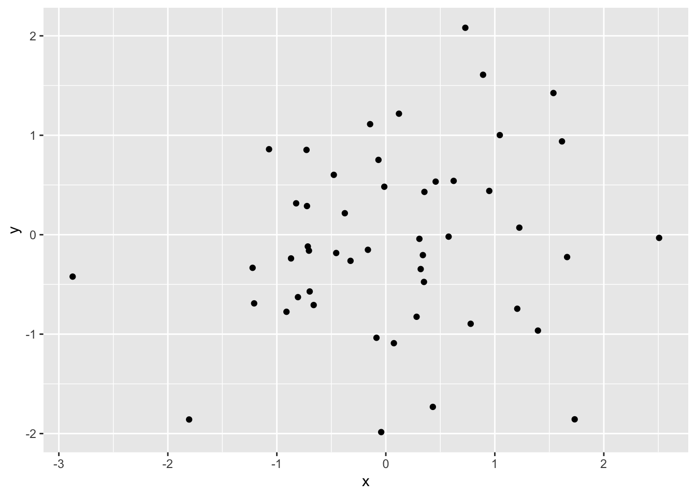
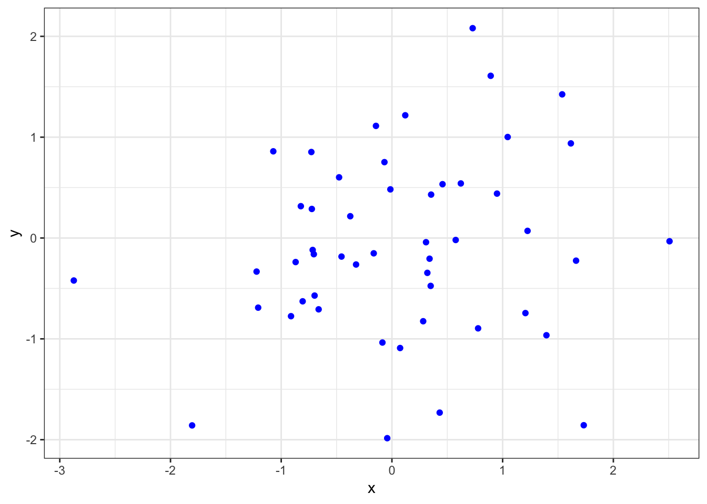

Chapter 2 簡介
本章介紹資料程式設計的一般原則。資料程式設計是一種隨資料一起工作和發展的實踐。與點擊式方法不同，程式設計允許用戶以更有效的方式管理資料和處理資料。程式旨在由用戶和協作者進行複制。可以迭代地和遞增地開發和更新資料程式。換句話說，它是建立不重複的步驟達成高效率的成品。它需要調整測試，這是除錯的過程，但事實上，程式工程師自己在未來的工作中可以使用不同的輸入，或者在使用狀況不同的時候，來更新程式不同的情況。
2.1 程式設計原則
社會科學家 Gentzkow and Shapiro (2014) 列出了資料程式設計的一些原則。
- 自動化
- 可複制性（不過時，面向未來）
- 版本控制
- 允許進化和更新版本
- 使用Git和GitHub
- 目錄
- 按功能組織
- 索引
- 索引變數（關係型數據庫）
- 簡約化
- KISS（保持簡短）
- 紀錄
- 給後續使用者的註解
- 管理
- 準備作共同開發
2.2 資料程式的功能
一個數據程式可以具備或執行以下功能：
- 紀錄數據內容
- 導入和導出數據
- 管理數據
- 數據視覺化
- 數據模型
Sample R Programs R 程式範例:
R basics 基本程式
# Create variables composed of random numbers
x <-rnorm(50)
y = rnorm(x)
# Plot the points in the plane 平面制圖
plot(x, y)
Using R packages R 組件包
# Plot better, using the ggplot2 package
## Prerequisite: install and load the ggplot2 package
## install.packages("ggplot2")
library(ggplot2)
qplot(x,y)
More R Data Visualization R 數據視覺化
# Plot better better with ggplot2
ggplot(,aes(x,y)) + theme_bw() + geom_point(col="blue")
Sample Python Programs Python 程式範例 (## 代表程式輸出)
Python using Pandas
# Import a text file in csv format
import pandas as pd
CO2 = pd.read_csv("https://raw.githubusercontent.com/kho777/data-visualization/master/data/CO2.csv")
# Take a glimpse of the data file
CO2.head()## country CO2 _kt CO2pc CO2percent
## 0 Australia 446,348 18.6 1.23%
## 1 United States 5,172,336 16.1 14.26%
## 2 Saudi Arabia 505,565 16.0 1.39%
## 3 Canada 555,401 15.5 1.53%
## 4 Russia 1,760,895 12.3 4.86%Python using Matplotlib
# Using matplotlib to do a simple plot
import matplotlib.pyplot as plt
CO2pc=CO2["CO2pc"]
plt.plot(CO2pc)在接下來的章節中，將提供示範程式來說明這些功能。